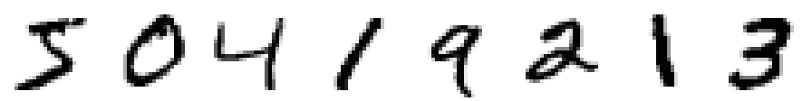
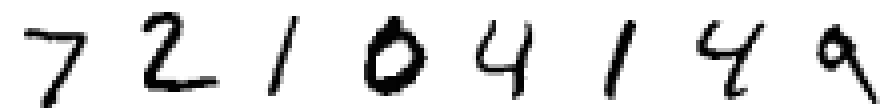
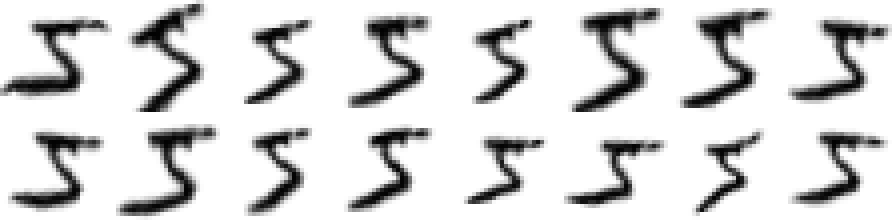
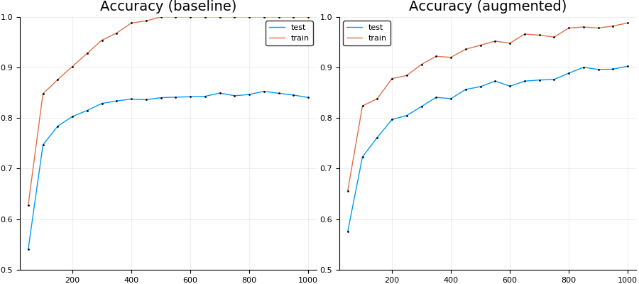

MNIST: TensorFlow CNN
In this tutorial we will adapt the MNIST example from TensorFlow.jl to utilize a custom augmentation pipeline. In order to showcase the effect that image augmentation can have on a neural network's ability to generalize, we will limit the training set to just the first 500 images (of the available 60,000!). For more information on the dataset see [MNIST1998].
This tutorial is also available as a Juypter notebook. You can find a link to the Juypter version of this tutorial in the top right corner of this page.
Preparing the MNIST dataset
In order to access, prepare, and visualize the MNIST images we employ the help of three additional Julia packages. In the interest of time and space we will not go into great detail about their functionality. Feel free to click on their respective names to find out more information about the utility they can provide.
MLDatasets.jl has an MNIST submodule that offers a convenience interface to read the MNIST database.
Images.jl will provide us with the necessary tools to process and display the image data in Julia / Juypter.
MLDataUtils.jl implements a variety of functions to convert and partition Machine Learning datasets. This will help us prepare the MNIST data to be used with TensorFlow.
using Images, MLDatasets, MLDataUtils
srand(42);As you may have seen previously in the elastic distortions tutorial, the function MNIST.traintensor returns the MNIST training images corresponding to the given indices as a multi-dimensional array. These images are stored in the native horizontal-major memory layout as a single array of Float64. All the individual values are scaled to be between 0.0 and 1.0. Also note, how the observations are laid out along the last array dimension
@show summary(MNIST.traintensor(1:500));summary(MNIST.traintensor(1:500)) = "28×28×500 Array{Float64,3}"The corresponding label of each image is stored as an integer value between 0 and 9. That means that if the label has the value 3, then the corresponding image is known to be a handwritten "3". To show a more concrete example, the following code reveals that the first training image denotes a "5" and the second training image a "0" (etc).
@show summary(MNIST.trainlabels(1:500))
println("First eight labels: ", join(MNIST.trainlabels(1:8),", "))summary(MNIST.trainlabels(1:500)) = "500-element Array{Int64,1}"
First eight labels: 5, 0, 4, 1, 9, 2, 1, 3For TensorFlow we will require a slightly different dimension layout for the images. More specifically, we will move the observations into the first array dimension. The labels will be transformed into a one-of-k matrix. For performance reasons, we will further convert all the numerical values to be of type Float32. We will do all this by creating a little utility function that we will name prepare_mnist.
"""
prepare_mnist(tensor, labels) -> (X, Y)
Change the dimension layout x1×x2×N of the given array
`tensor` to N×x1×x2 and store the result in `X`.
The given vector `labels` is transformed into a 10×N
one-hot matrix `Y`. Both, `X` and `Y`, will have the
element type `Float32`.
"""
function prepare_mnist(tensor, labels)
features = convert(Array{Float32}, permutedims(tensor, (3,1,2)))
targets = convertlabel(LabelEnc.OneOfK{Float32}, labels, 0:9, ObsDim.First())
features, targets
endWith prepare_mnist defined, we can now use it in conjunction with the functions in the MLDatasets.MNIST sub-module to load and prepare our training set. Recall that for this tutorial only use the first 500 images of the training set will be used.
train_x, train_y = prepare_mnist(MNIST.traintensor(1:500), MNIST.trainlabels(1:500))
@show summary(train_x) summary(train_y);
[MNIST.convert2image(train_x[i,:,:]) for i in 1:8]summary(train_x) = "500×28×28 Array{Float32,3}"
summary(train_y) = "500×10 Array{Float32,2}"
Similarly, we use MNIST.testtensor and MNIST.testlabels to load the full MNIST test set. We will utilize that data to measure how well the network is able to generalize with and without augmentation.
test_x, test_y = prepare_mnist(MNIST.testtensor(), MNIST.testlabels())
@show summary(test_x) summary(test_y);
[MNIST.convert2image(test_x[i,:,:]) for i in 1:8]summary(test_x) = "10000×28×28 Array{Float32,3}"
summary(test_y) = "10000×10 Array{Float32,2}"
Defining the Network
With the dataset prepared, we can now instantiate our neural network. To keep things simple, we will use the same convolutional network as defined in the MNIST example of Julia's TensorFlow package.
using TensorFlow, Distributions
session = Session(Graph());2017-09-29 02:37:38.813712: W tensorflow/core/platform/cpu_feature_guard.cc:45] The TensorFlow library wasn't compiled to use SSE4.1 instructions, but these are available on your machine and could speed up CPU computations.
2017-09-29 02:37:38.813766: W tensorflow/core/platform/cpu_feature_guard.cc:45] The TensorFlow library wasn't compiled to use SSE4.2 instructions, but these are available on your machine and could speed up CPU computations.
2017-09-29 02:37:38.813794: W tensorflow/core/platform/cpu_feature_guard.cc:45] The TensorFlow library wasn't compiled to use AVX instructions, but these are available on your machine and could speed up CPU computations.
2017-09-29 02:37:38.813810: W tensorflow/core/platform/cpu_feature_guard.cc:45] The TensorFlow library wasn't compiled to use AVX2 instructions, but these are available on your machine and could speed up CPU computations.
2017-09-29 02:37:38.813823: W tensorflow/core/platform/cpu_feature_guard.cc:45] The TensorFlow library wasn't compiled to use FMA instructions, but these are available on your machine and could speed up CPU computations.
2017-09-29 02:37:39.256419: I tensorflow/core/common_runtime/gpu/gpu_device.cc:955] Found device 0 with properties:
name: Quadro M6000 24GB
major: 5 minor: 2 memoryClockRate (GHz) 1.114
pciBusID 0000:02:00.0
Total memory: 23.86GiB
Free memory: 23.48GiB
2017-09-29 02:37:39.256475: I tensorflow/core/common_runtime/gpu/gpu_device.cc:976] DMA: 0
2017-09-29 02:37:39.256494: I tensorflow/core/common_runtime/gpu/gpu_device.cc:986] 0: Y
2017-09-29 02:37:39.256526: I tensorflow/core/common_runtime/gpu/gpu_device.cc:1045] Creating TensorFlow device (/gpu:0) -> (device: 0, name: Quadro M6000 24GB, pci bus id: 0000:02:00.0)function weight_variable(shape...)
initial = map(Float32, rand(Normal(0, .001), shape...))
return Variable(initial)
end
function bias_variable(shape...)
initial = fill(Float32(.1), shape...)
return Variable(initial)
end
function conv2d(x, W)
nn.conv2d(x, W, [1, 1, 1, 1], "SAME")
end
function max_pool_2x2(x)
nn.max_pool(x, [1, 2, 2, 1], [1, 2, 2, 1], "SAME")
end@tf begin
x = placeholder(Float32)
y = placeholder(Float32)
W_conv1 = weight_variable(5, 5, 1, 32)
b_conv1 = bias_variable(32)
x_image = reshape(x, [-1, 28, 28, 1])
h_conv1 = nn.relu(conv2d(x_image, W_conv1) + b_conv1)
h_pool1 = max_pool_2x2(h_conv1)
W_conv2 = weight_variable(5, 5, 32, 64)
b_conv2 = bias_variable(64)
h_conv2 = nn.relu(conv2d(h_pool1, W_conv2) + b_conv2)
h_pool2 = max_pool_2x2(h_conv2)
W_fc1 = weight_variable(7*7*64, 1024)
b_fc1 = bias_variable(1024)
h_pool2_flat = reshape(h_pool2, [-1, 7*7*64])
h_fc1 = nn.relu(h_pool2_flat * W_fc1 + b_fc1)
keep_prob = placeholder(Float32)
h_fc1_drop = nn.dropout(h_fc1, keep_prob)
W_fc2 = weight_variable(1024, 10)
b_fc2 = bias_variable(10)
y_conv = nn.softmax(h_fc1_drop * W_fc2 + b_fc2)
global cross_entropy = reduce_mean(-reduce_sum(y.*log(y_conv+1e-8), axis=[2]))
global optimizer = train.minimize(train.AdamOptimizer(1e-4), cross_entropy)
correct_prediction = broadcast(==, indmax(y_conv, 2), indmax(y, 2))
global accuracy = reduce_mean(cast(correct_prediction, Float32))
endTraining without Augmentation
In order to get an intuition for how useful augmentation can be, we need a sensible baseline to compare to. To that end, we will first train the network we just defined using only the (unaltered) 500 training examples.
The package ValueHistories.jl will help us record the accuracy during the training process. We will use those logs later to visualize the differences between having augmentation or no augmentation.
using ValueHistoriesTo keep things simple, we will not overly optimize our training function. Thus, we will be content with using a closure. Because both, the baseline and the augmented version, will share this "inefficiency", we should still get a decent enough picture of their performance differences.
function train_baseline(; epochs=500, batchsize=100, reset=true)
reset && run(session, global_variables_initializer())
log = MVHistory()
for epoch in 1:epochs
for (batch_x, batch_y) in eachbatch(shuffleobs((train_x, train_y), obsdim=1), size=batchsize, obsdim=1)
run(session, optimizer, Dict(x=>batch_x, y=>batch_y, keep_prob=>0.5))
end
if (epoch % 50) == 0
train = run(session, accuracy, Dict(x=>train_x, y=>train_y, keep_prob=>1.0))
test = run(session, accuracy, Dict(x=>test_x, y=>test_y, keep_prob=>1.0))
@trace log epoch train test
msg = "epoch " * lpad(epoch,4) * ": train accuracy " * rpad(round(train,3),5,"0") * ", test accuracy " * rpad(round(test,3),5,"0")
println(msg)
end
end
log
endAside from the accuracy, we will also keep an eye on the training time. In particular we would like to see if and how the addition of augmentation causes our training time to increase.
train_baseline(epochs=1) # warm-up
baseline_log = @time train_baseline(epochs=1000);epoch 50: train accuracy 0.628, test accuracy 0.541
epoch 100: train accuracy 0.848, test accuracy 0.747
epoch 150: train accuracy 0.876, test accuracy 0.784
epoch 200: train accuracy 0.902, test accuracy 0.803
epoch 250: train accuracy 0.928, test accuracy 0.815
epoch 300: train accuracy 0.954, test accuracy 0.829
epoch 350: train accuracy 0.968, test accuracy 0.834
epoch 400: train accuracy 0.988, test accuracy 0.838
epoch 450: train accuracy 0.992, test accuracy 0.836
epoch 500: train accuracy 1.000, test accuracy 0.840
epoch 550: train accuracy 1.000, test accuracy 0.841
epoch 600: train accuracy 1.000, test accuracy 0.842
epoch 650: train accuracy 1.000, test accuracy 0.843
epoch 700: train accuracy 1.000, test accuracy 0.849
epoch 750: train accuracy 1.000, test accuracy 0.844
epoch 800: train accuracy 1.000, test accuracy 0.847
epoch 850: train accuracy 1.000, test accuracy 0.853
epoch 900: train accuracy 1.000, test accuracy 0.849
epoch 950: train accuracy 1.000, test accuracy 0.845
epoch 1000: train accuracy 1.000, test accuracy 0.841
61.100217 seconds (3.14 M allocations: 2.586 GiB, 1.25% gc time)As we can see, the accuracy on the training set is around a 100%, while the accuracy on the test set peaks around 85%. For a mere 500 training examples, this isn't actually that bad of a result.
Integrating Augmentor
Now that we have a network architecture with a baseline to compare to, let us finally see what it takes to add Augmentor to our experiment. First, we need to include the package to our experiment.
using AugmentorThe next step, and maybe the most human-hour consuming part of adding image augmentation to a prediction problem, is to design and select a sensible augmentation pipeline. Take a look at the elastic distortions tutorial for an example of how to do just that.
For this example, we already choose a quite complicated but promising augmentation pipeline for you. This pipeline was designed to yield a large variation of effects as well as to showcase how even deep pipelines are quite efficient in terms of performance.
pl = PermuteDims(2,1) |>
ShearX(-5:5) * ShearY(-5:5) |>
Rotate(-15:15) |>
CropSize(28,28) |>
Zoom(0.9:0.1:1.2) |>
CacheImage() |>
ElasticDistortion(10) |>
PermuteDims(2,1)8-step Augmentor.ImmutablePipeline:
1.) Permute dimension order to (2, 1)
2.) Either: (50%) ShearX by ϕ ∈ -5:5 degree. (50%) ShearY by ψ ∈ -5:5 degree.
3.) Rotate by θ ∈ -15:15 degree
4.) Crop a 28×28 window around the center
5.) Zoom by I ∈ {0.9×0.9, 1.0×1.0, 1.1×1.1, 1.2×1.2}
6.) Cache into temporary buffer
7.) Distort using a smoothed and normalized 10×10 grid with pinned border
8.) Permute dimension order to (2, 1)Most of the used operations are quite self explanatory, but there are some details about this pipeline worth pointing out explicitly.
We use the operation
PermuteDimsto convert the horizontal-major MNIST image to a julia-native vertical-major image. The vertical-major image is then processed and converted back to a horizontal-major array. We mainly do this here to showcase the option, but it is also to keep consistent with how the data is usually used in the literature. Alternatively, one could just work with the MNIST data in a vertical-major format all the way through without any issue.As counter-intuitive as it sounds, the operation
CacheImageright beforeElasticDistortionis actually used to improve performance. If we were to omit it, then the whole pipeline would be applied in one single pass. In this case, applying distortions on top of affine transformations lazily is in fact less efficient than using a temporary variable.
With the pipeline now defined, let us quickly peek at what kind of effects we can achieve with it. In particular, lets apply the pipeline multiple times to the first training image and look at what kind of results it produces.
[MNIST.convert2image(augment(train_x[1,:,:], pl)) for i in 1:8, j in 1:2]
As we can see, we can achieve a wide range of effects, from more subtle to more pronounced. The important part is that all examples are still clearly representative of the true label.
Next, we have to adapt the function train_baseline to make use of our augmentation pipeline. To integrate Augmentor efficiently, there are three necessary changes we have to make.
Preallocate a buffer with the same size and element type that each batch has.
augmented_x = zeros(Float32, batchsize, 28, 28)Add a call to
augmentbatch!in the inner loop of the batch iterator using our pipeline and buffer.augmentbatch!(augmented_x, batch_x, pl, ObsDim.First())Replace
x=>batch_xwithx=>augmented_xin the call to TensorFlow'srun(session, ...).
Applying these changes to our train_baseline function will give us something similar to the following function. Note how all the other parts of the function remain exactly the same as before.
function train_augmented(; epochs=500, batchsize=100, reset=true)
reset && run(session, global_variables_initializer())
log = MVHistory()
augm_x = zeros(Float32, batchsize, size(train_x,2), size(train_x,3))
for epoch in 1:epochs
for (batch_x, batch_y) in eachbatch(shuffleobs((train_x, train_y), obsdim=1), size=batchsize, obsdim=1)
augmentbatch!(CPUThreads(), augm_x, batch_x, pl, ObsDim.First())
run(session, optimizer, Dict(x=>augm_x, y=>batch_y, keep_prob=>0.5))
end
if (epoch % 50) == 0
train = run(session, accuracy, Dict(x=>train_x, y=>train_y, keep_prob=>1.0))
test = run(session, accuracy, Dict(x=>test_x, y=>test_y, keep_prob=>1.0))
@trace log epoch train test
msg = "epoch " * lpad(epoch,4) * ": train accuracy " * rpad(round(train,3),5,"0") * ", test accuracy " * rpad(round(test,3),5,"0")
println(msg)
end
end
log
endYou may have noticed in the code above that we also pass a CPUThreads() as the first argument to augmentbatch!. This instructs Augmentor to process the images of the batch in parallel using multi-threading. For this to work properly you will need to set the environment variable JULIA_NUM_THREADS to the number of threads you wish to use. You can check how many threads are used with the function Threads.nthreads()
@show Threads.nthreads();Threads.nthreads() = 12Now that all pieces are in place, let us train our network once more. We will use the same parameters except that now instead of the original training images we will be using randomly augmented images. This will cause every epoch to be different.
train_augmented(epochs=1) # warm-up
augmented_log = @time train_augmented(epochs=1000);epoch 50: train accuracy 0.656, test accuracy 0.575
epoch 100: train accuracy 0.824, test accuracy 0.723
epoch 150: train accuracy 0.838, test accuracy 0.761
epoch 200: train accuracy 0.878, test accuracy 0.797
epoch 250: train accuracy 0.884, test accuracy 0.805
epoch 300: train accuracy 0.906, test accuracy 0.823
epoch 350: train accuracy 0.922, test accuracy 0.841
epoch 400: train accuracy 0.920, test accuracy 0.838
epoch 450: train accuracy 0.936, test accuracy 0.856
epoch 500: train accuracy 0.944, test accuracy 0.862
epoch 550: train accuracy 0.952, test accuracy 0.873
epoch 600: train accuracy 0.948, test accuracy 0.863
epoch 650: train accuracy 0.966, test accuracy 0.873
epoch 700: train accuracy 0.964, test accuracy 0.875
epoch 750: train accuracy 0.960, test accuracy 0.876
epoch 800: train accuracy 0.978, test accuracy 0.889
epoch 850: train accuracy 0.980, test accuracy 0.900
epoch 900: train accuracy 0.978, test accuracy 0.896
epoch 950: train accuracy 0.982, test accuracy 0.897
epoch 1000: train accuracy 0.988, test accuracy 0.903
123.952951 seconds (121.11 M allocations: 127.392 GiB, 10.26% gc time)As we can see, our network reaches far better results on our testset than our baseline network did. However, we can also see that the training took quite a bit longer than before. This difference generally decreases as the complexity of the utilized neural network increases. Yet another way to improve performance (aside from simplifying the augmentation pipeline) would be to increase the number of available threads.
Visualizing the Results
Before we end this tutorial, let us make use the Plots.jl package to visualize and discuss the recorded training curves. We will plot the accuracy curves of both networks side by side in order to get a good feeling about their differences.
using Plots
pyplot()plt = plot(
plot(baseline_log, title="Accuracy (baseline)", ylim=(.5,1)),
plot(augmented_log, title="Accuracy (augmented)", ylim=(.5,1)),
size = (900, 400),
markersize = 1
)
Note how the accuracy on the (unaltered) training set increases much faster for the baseline network than for the augmented one. This is to be expected, since our augmented network doesn't actually use the unaltered images for training, and thus has not actually seen them. Given this information, it is worth pointing out explicitly how the accuracy on training set is still greater than on the test set for the augmented network as well. This is also not a surprise, given that the augmented images are likely more similar to their original ones than to the test images.
For the baseline network, the accuracy on the test set plateaus quite quickly (around 85%). For the augmented network on the other hand, it the accuracy keeps increasing for quite a while longer. If you let the network train long enough you can achieve around 97% even before it stops learning.
References
LeCun, Yan, Corinna Cortes, Christopher J.C. Burges. "The MNIST database of handwritten digits" Website. 1998.